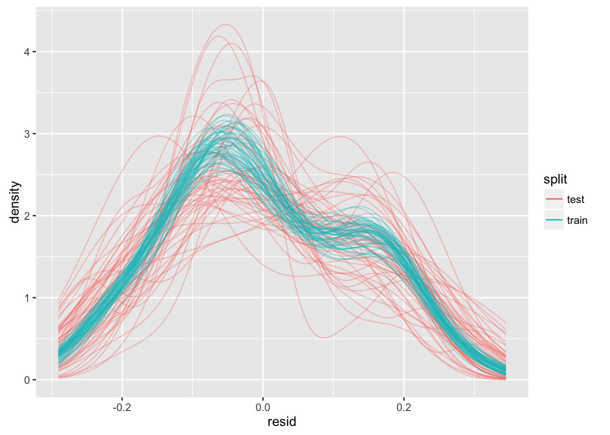
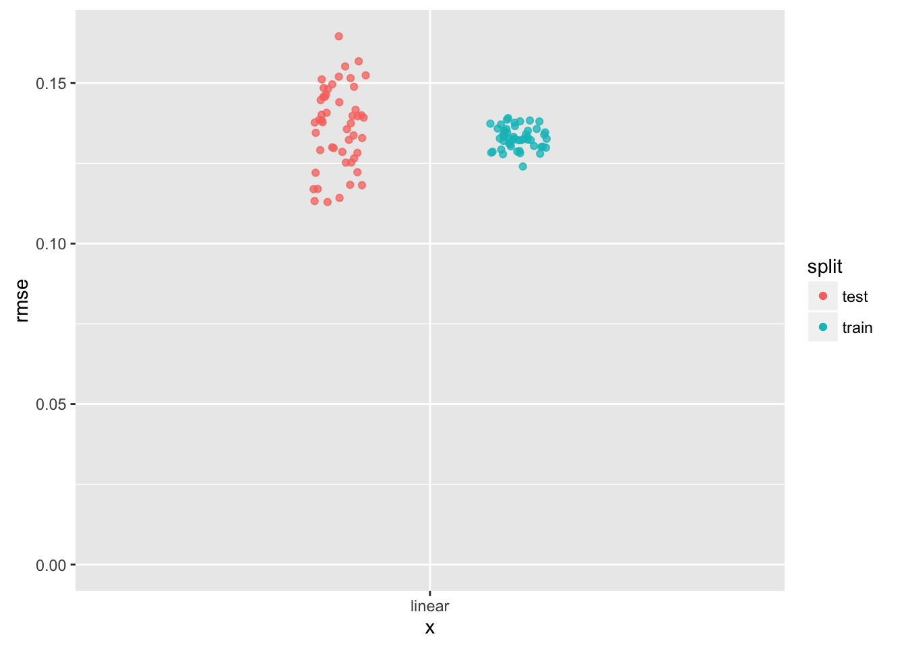
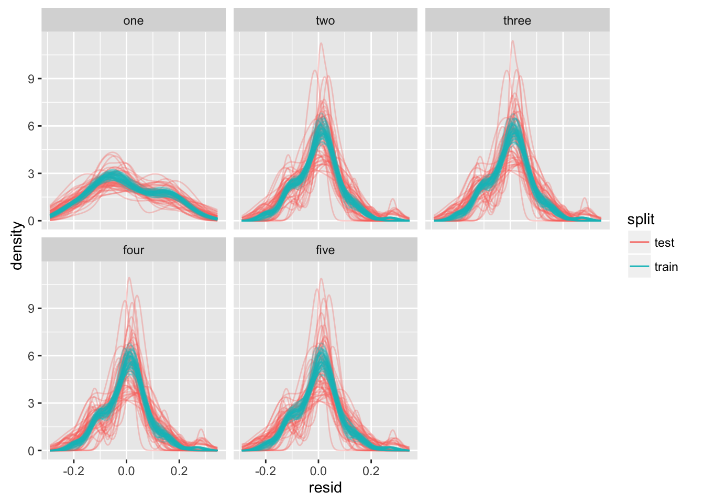
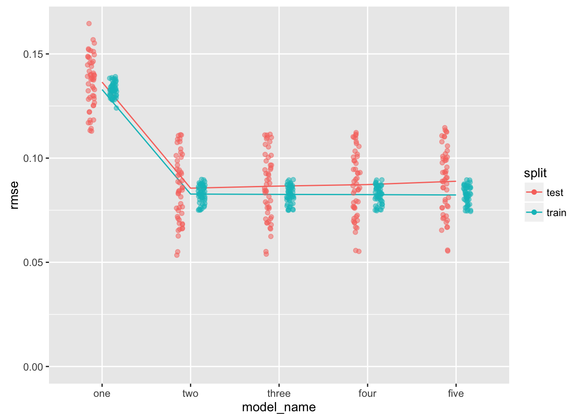
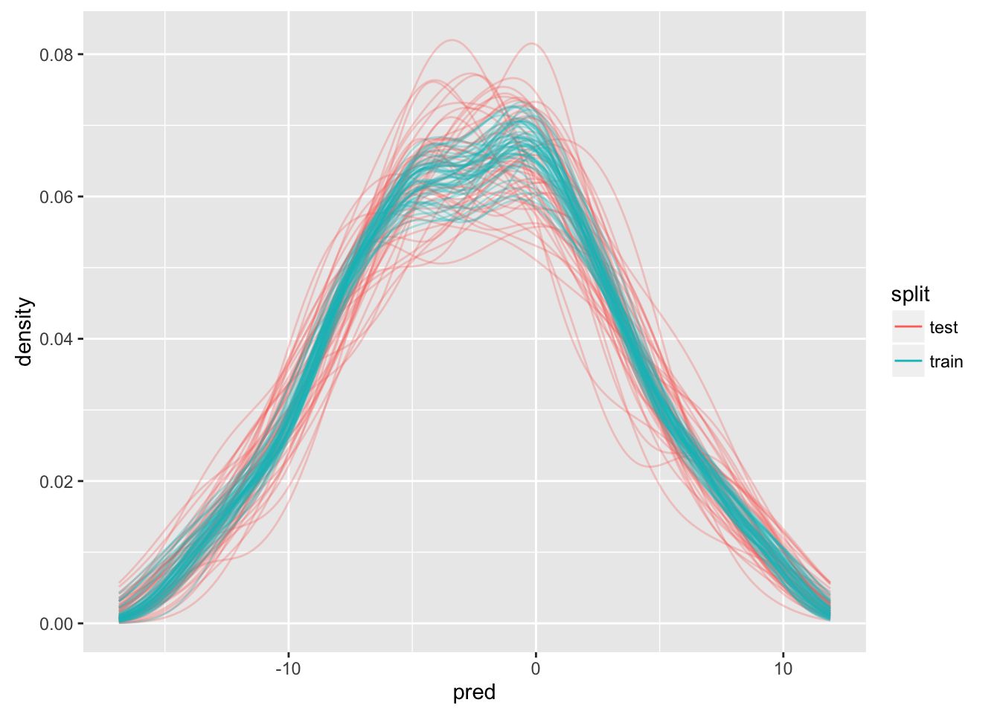
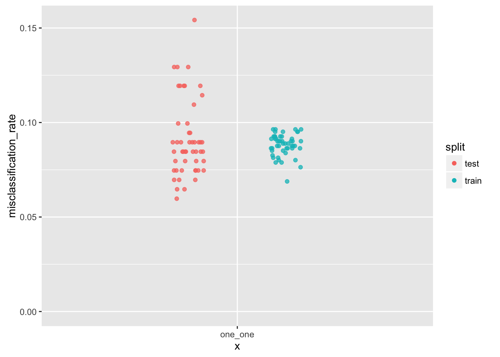
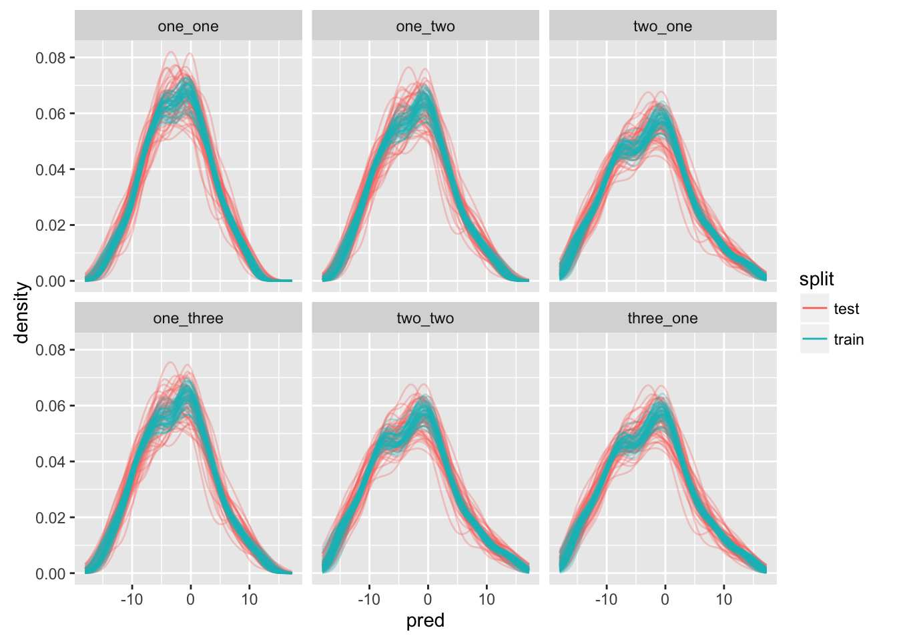
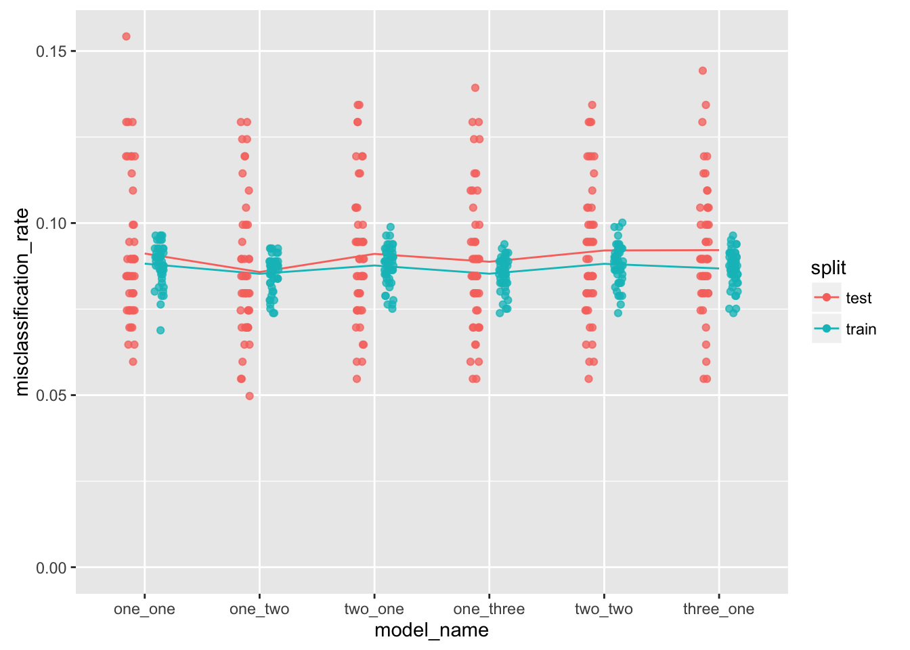

library("devtools")
library("tibble")
library("ggplot2")
library("modelr")
library("dplyr")
library("purrr")
library("tidyr")
library("pryr")There are three type of things we want to do:
For a given model, make an estimate of its performance. We will do this using cross-validation, employing a number of different random train/test splits; the estimate of performance for a given model will be an aggregation of the performance of each of the splits.
Evaluation of the performance of a number of models - each model will have a different set of features. It is thought that, at first, that all of the models evaluated as a set will have the same family, i.e. lm(), but this may not always be the case, as we may be further interested in making a selection from models of different families.
For a given model (such as the chosen one), we want to make an estimate of how much confidence we should have in the significance of each of its coefficients.
For the first two, we will use cross-validation - for the third we will use boostrapping.
In each case, I am trying to follow the spirit of “An Introduction to Statistical Learning” using the purrr/modelr toolbox.
Following Hadley’s example, we want to create a dataset using the “truth” and “noise” that we specify.
The truth function is a simple quadratic:
truth <- function(x){
1 + 2*x - x^2
}The noise function is a normal distribution with a nominal standard-deviation.
noise <- function(x){
rnorm(length(x), sd = 0.1)
}We assemble a dataset using a random uniform distribution in \(x\); our \(y\) is the sum of truth and noise.
df <-
data_frame(
x = runif(n = 100, min = 0, max = 1),
y = truth(x) + noise(x)
) %>%
print()# A tibble: 100 × 2
x y
<dbl> <dbl>
1 0.6907018 1.797070
2 0.9035268 1.862518
3 0.4931883 1.804119
4 0.5879323 1.761739
5 0.7400521 1.899691
6 0.3574554 1.549152
7 0.7040876 1.892374
8 0.3620721 1.562440
9 0.1271176 1.292875
10 0.3819756 1.511213
# ... with 90 more rowsOf course, our first step is to visualize the dataset.
ggplot(df, aes(x = x, y = y)) +
stat_function(fun = truth, color = "black", alpha = 0.7, linetype = "dashed") +
geom_point(alpha = 0.6)This is a special case where we have a single independent variable. This is great for showing the concepts, but I am interested to explore visual tools that I can use to assess models that use multiple independent variables. It seems that focusing on the residual might be a useful place to start.
We will start by following Hadley and Garrett, building a dataframe that to contain a number of random splits of our original data into a data to train a model, and data to test a model. We use the the crossv_mc() function from the modelr package.
df_split <-
df %>%
crossv_mc(n = 50) %>%
print()# A tibble: 50 × 3
train test .id
<list> <list> <chr>
1 <S3: resample> <S3: resample> 01
2 <S3: resample> <S3: resample> 02
3 <S3: resample> <S3: resample> 03
4 <S3: resample> <S3: resample> 04
5 <S3: resample> <S3: resample> 05
6 <S3: resample> <S3: resample> 06
7 <S3: resample> <S3: resample> 07
8 <S3: resample> <S3: resample> 08
9 <S3: resample> <S3: resample> 09
10 <S3: resample> <S3: resample> 10
# ... with 40 more rowsWe have 50 sets of splits; let’s have a closer look at one of the splits.
str(df_split[1,])Classes 'tbl_df', 'tbl' and 'data.frame': 1 obs. of 3 variables:
$ train:List of 1
..$ :List of 2
.. ..$ data:Classes 'tbl_df', 'tbl' and 'data.frame': 100 obs. of 2 variables:
.. .. ..$ x: num 0.691 0.904 0.493 0.588 0.74 ...
.. .. ..$ y: num 1.8 1.86 1.8 1.76 1.9 ...
.. ..$ idx : int 2 3 4 5 8 9 10 12 13 14 ...
.. ..- attr(*, "class")= chr "resample"
$ test :List of 1
..$ :List of 2
.. ..$ data:Classes 'tbl_df', 'tbl' and 'data.frame': 100 obs. of 2 variables:
.. .. ..$ x: num 0.691 0.904 0.493 0.588 0.74 ...
.. .. ..$ y: num 1.8 1.86 1.8 1.76 1.9 ...
.. ..$ idx : int 1 6 7 11 16 27 36 39 40 41 ...
.. ..- attr(*, "class")= chr "resample"
$ .id : chr "01"One thing you may notice is that both the train and test elements both appear to contain the entire original dataset. In fact, R keeps a single copy of the original dataframe, then uses pointers wherever it is used elsewhere in the session. For more, you can read this section and how I got some help in this thread.
We can demonstrate this using the object_size() function in the pryr package. Keep in mind that df_split contains 100 references to df.
object_size(df)2.5 kBobject_size(df_split)55.8 kBThe next step is to make a function that takes a dataframe and returns a model. A lot of things will be made easier if you make functions in advance - or make them later so that it appears that you made them in advance (only git will know). In our case, we are going to look at how a linear model, linear in \(x\). Keep in mind that the “truth” is quadratic in \(x\).
# given a dataframe, return a model
fn_model <- function(df){
lm(y ~ x, data = df)
}We use the map() function from the purrr package to make models based on our training sets and our model function.
df_split_model <-
df_split %>%
mutate(model = map(train, fn_model)) %>%
print()# A tibble: 50 × 4
train test .id model
<list> <list> <chr> <list>
1 <S3: resample> <S3: resample> 01 <S3: lm>
2 <S3: resample> <S3: resample> 02 <S3: lm>
3 <S3: resample> <S3: resample> 03 <S3: lm>
4 <S3: resample> <S3: resample> 04 <S3: lm>
5 <S3: resample> <S3: resample> 05 <S3: lm>
6 <S3: resample> <S3: resample> 06 <S3: lm>
7 <S3: resample> <S3: resample> 07 <S3: lm>
8 <S3: resample> <S3: resample> 08 <S3: lm>
9 <S3: resample> <S3: resample> 09 <S3: lm>
10 <S3: resample> <S3: resample> 10 <S3: lm>
# ... with 40 more rowsFor each train/test split we now have a model associated. Before moving on, there are two issues I have with using the lm() function in this context. One is that lm() is not, as they say, “data first” - the first argument is a formula, not a dataframe. This makes it less easy to use in this context (requiring a function to wrap it). This problem is being addressed by the “intubate” package. My second issue is that lm() saves the entire training dataset for each model, obviating the savings achieved in the previous step.
object_size(df_split_model)618 kBMine is not the best judgement in this area, but it seems there are a couple of things that could be done - follow the approach used by the “biglm” package, which uses a lightweight structure to store the model, or perhaps to adapt lm() to use a S3 resample object. OK, that second idea is a little unhinged.
This is all to say that the purpose here is different than the one for which lm() was originally written.
Onwards. For the next step, we need functions to determine, for a given sample and model, the response, the predicted value, and the residual.
sample_prediction <- function(model, sample){
df <- as.data.frame(sample)
pred <- stats::predict(model, df)
pred
}
# this will work for lm, biglm - will have to check for others
sample_response <- function(model, sample){
df <- as.data.frame(sample)
var_response <- all.vars(formula(model))[[1]]
df[[var_response]]
}This next set of steps is a bit ambitious. We want to make a tall dataframe, where the split becomes a variable that can take the values train or test. For each model-split combination, we make a set of predictions and responses. We unnest the dataframe, then for each observation, we calculate the residual.
# the reason I am not using add_prediction here is that I want to jettison the
# data more-easily and focus on the residuals
df_split_resid <-
df_split_model %>%
gather(key = split, value = data, train, test) %>%
mutate(
pred = map2(model, data, sample_prediction),
resp = map2(model, data, sample_response),
resid = map2(pred, resp, `-`)
) %>%
select(.id, split, pred, resp, resid) %>%
unnest() %>%
print()# A tibble: 5,000 × 5
.id split pred resp resid
<chr> <chr> <dbl> <dbl> <dbl>
1 01 train 2.031221 1.8625178 0.168702999
2 01 train 1.626594 1.8041191 -0.177525085
3 01 train 1.720019 1.7617386 -0.041719391
4 01 train 1.870022 1.8996912 -0.029669671
5 01 train 1.497303 1.5624401 -0.065137135
6 01 train 1.265619 1.2928754 -0.027256354
7 01 train 1.516929 1.5112128 0.005716672
8 01 train 1.911335 1.7728667 0.138468558
9 01 train 2.028496 2.0118611 0.016635180
10 01 train 1.149358 0.9904177 0.158940347
# ... with 4,990 more rowsThe thing we are interested to do is to compare the performance of models on their trianing sets with their proformance on their test sets. One way we can do this is to make qualitative assesments of the kernel density of the residuals.
ggplot(df_split_resid, aes(x = resid, color = split, group = paste(split, .id))) +
stat_density(
aes(y = ..density..),
geom = "line",
position = "identity",
alpha = 0.3
) +
guides(color = guide_legend(override.aes = list(alpha = 1)))
We can see that fitting models that are linear in \(x\) to data that are quadratic in \(x\) may be problematic. Although the kernel-density estimates for all the training residuals seem consistent one to another, the kernel-density estimates of the test sets seem inconsistent with those for the training sets, and with each other.
We can reduce the data for each training or test set to a single statistic. For regression problems, Hadley likes to use the RMSE, or root-mean-squared error because it gives us a useful first idea of how a given model performs, and it is expressed in the same units as the response.
df_split_rmse <-
df_split_resid %>%
group_by(.id, split) %>%
summarize(
rmse = sqrt(sum(resid*resid)/length(resid))
) %>%
ungroup() %>%
print()# A tibble: 100 × 3
.id split rmse
<chr> <chr> <dbl>
1 01 test 0.10615289
2 01 train 0.12293299
3 02 test 0.10509013
4 02 train 0.12313770
5 03 test 0.08787982
6 03 train 0.12659950
7 04 test 0.11367102
8 04 train 0.12140640
9 05 test 0.11392645
10 05 train 0.12108145
# ... with 90 more rowsWe can visualize this summary.
ggplot(df_split_rmse, aes(x = "linear", y = rmse)) +
geom_point(
aes(color = split),
position = position_jitterdodge(jitter.width = 0.2, dodge.width = 0.5),
alpha = 0.75
) +
ylim(0, NA) +
guides(color = guide_legend(override.aes = list(alpha = 1)))
We can see some differences in the behavior of the test data, compared with the training data. It would be much more useful to make these comparisons for different models.
The first thing we will need to do is to make a list of functions, each one to return a different model.
We are going to do is create a function that, given the order of the polynomial, returns a function to make that model (given some data). Got it?
make_model <- function(order){
# superstition (maybe) to evaluate the expression, preserving it
# in this environment for the function
order
function(df){
df <- as.data.frame(df)
lm(y ~ poly(x, order), data = df)
}
}Now we can make a dataframe of models and give each an appropriate name. The frame_data() function in the “tibble” package can be useful for making row-wise (artisnal) dataframes.
df_model <-
frame_data(
~model_name, ~model_creator,
# "zero", make_model(0),
"one", make_model(1),
"two", make_model(2),
"three", make_model(3),
"four", make_model(4),
"five", make_model(5)
) %>%
print()# A tibble: 5 × 2
model_name model_creator
<chr> <list>
1 one <fun>
2 two <fun>
3 three <fun>
4 four <fun>
5 five <fun>Note to self, it would be interesting to have a function that takes a model as an input and returns a metric of complexity. Could be useful later.
Let’s join this model dataframe to the split-sample dataframe.
df_sample_model <-
expand.grid(.id = df_split$.id, model_name = df_model$model_name, stringsAsFactors = FALSE) %>%
as_data_frame() %>%
left_join(df_split, by = ".id") %>%
left_join(df_model, by = "model_name") %>%
print()# A tibble: 250 × 5
.id model_name train test model_creator
<chr> <chr> <list> <list> <list>
1 01 one <S3: resample> <S3: resample> <fun>
2 02 one <S3: resample> <S3: resample> <fun>
3 03 one <S3: resample> <S3: resample> <fun>
4 04 one <S3: resample> <S3: resample> <fun>
5 05 one <S3: resample> <S3: resample> <fun>
6 06 one <S3: resample> <S3: resample> <fun>
7 07 one <S3: resample> <S3: resample> <fun>
8 08 one <S3: resample> <S3: resample> <fun>
9 09 one <S3: resample> <S3: resample> <fun>
10 10 one <S3: resample> <S3: resample> <fun>
# ... with 240 more rowsWe now have a dataframe that has, for each combination of split and model-specification, a training set and a function that can be used to build a model. We make a convenience function to put our model-creator functions to use, then create our models:
make_model <- function(data, model_creator){
model_creator(data)
}
df_sample_model_created <-
df_sample_model %>%
mutate(
model = map2(train, model_creator, make_model)
) %>%
print()# A tibble: 250 × 6
.id model_name train test model_creator model
<chr> <chr> <list> <list> <list> <list>
1 01 one <S3: resample> <S3: resample> <fun> <S3: lm>
2 02 one <S3: resample> <S3: resample> <fun> <S3: lm>
3 03 one <S3: resample> <S3: resample> <fun> <S3: lm>
4 04 one <S3: resample> <S3: resample> <fun> <S3: lm>
5 05 one <S3: resample> <S3: resample> <fun> <S3: lm>
6 06 one <S3: resample> <S3: resample> <fun> <S3: lm>
7 07 one <S3: resample> <S3: resample> <fun> <S3: lm>
8 08 one <S3: resample> <S3: resample> <fun> <S3: lm>
9 09 one <S3: resample> <S3: resample> <fun> <S3: lm>
10 10 one <S3: resample> <S3: resample> <fun> <S3: lm>
# ... with 240 more rowsNow, lets generate some residuals:
df_sample_resid <-
df_sample_model_created %>%
gather(key = split, value = data, train, test) %>%
mutate(
pred = map2(model, data, sample_prediction),
resp = map2(model, data, sample_response)
) %>%
select(.id, model_name, split, pred, resp) %>%
unnest() %>%
mutate(resid = pred - resp) %>%
print()# A tibble: 25,000 × 6
.id model_name split pred resp resid
<chr> <chr> <chr> <dbl> <dbl> <dbl>
1 01 one train 2.031221 1.8625178 0.168702999
2 01 one train 1.626594 1.8041191 -0.177525085
3 01 one train 1.720019 1.7617386 -0.041719391
4 01 one train 1.870022 1.8996912 -0.029669671
5 01 one train 1.497303 1.5624401 -0.065137135
6 01 one train 1.265619 1.2928754 -0.027256354
7 01 one train 1.516929 1.5112128 0.005716672
8 01 one train 1.911335 1.7728667 0.138468558
9 01 one train 2.028496 2.0118611 0.016635180
10 01 one train 1.149358 0.9904177 0.158940347
# ... with 24,990 more rowsAnd look at some kernel-density distributions:
df_sample_resid %>%
mutate(model_name = factor(model_name, levels = c("one", "two", "three", "four", "five"))) %>%
ggplot(aes(x = resid, color = split, group = paste(split, .id))) +
stat_density(
aes(y = ..density..),
geom = "line",
position = "identity",
alpha = 0.3
) +
facet_wrap(~ model_name) +
guides(color = guide_legend(override.aes = list(alpha = 1)))
df_sample_rmse <-
df_sample_resid %>%
group_by(.id, model_name, split) %>%
summarize(
rmse = sqrt(sum(resid*resid)/length(resid))
) %>%
ungroup() %>%
print()# A tibble: 500 × 4
.id model_name split rmse
<chr> <chr> <chr> <dbl>
1 01 five test 0.08796694
2 01 five train 0.09017604
3 01 four test 0.08671989
4 01 four train 0.09022954
5 01 one test 0.10615289
6 01 one train 0.12293299
7 01 three test 0.08743338
8 01 three train 0.09029576
9 01 two test 0.08730683
10 01 two train 0.09031520
# ... with 490 more rowsdf_sample_rmse %>%
mutate(model_name = factor(model_name, levels = c("one", "two", "three", "four", "five"))) %>%
ggplot(aes(x = model_name, y = rmse, color = split, group = split)) +
stat_summary(geom = "line", fun.y = "mean") +
geom_point(
position = position_jitterdodge(jitter.width = 0.2, dodge.width = 0.5),
alpha = 0.5
) +
ylim(0, NA) +
guides(color = guide_legend(override.aes = list(alpha = 1)))
The “two” model is the winner.
The lines connect the mean rmse for each model-type. I don’t know if median or mean is the better summary function to use for the lines (having experimented, I am liking the mean). I need to find a way to characterize the complexity of a given model so that the x-axis can be automatically sorted (maybe rmse on training error can be used to sort within groups of equally-complex models).
Some work to do, but I think this is headed somehwere. Also, apropos nothing, there appears to be an opportinity here to use multidplyr - maybe this could be an advanced topic.
Let’s look at a classification problem.
# clean this up
fn_x <- function(x){
-(x^2 - 2*x - 1)
}
resid_truth <- function(x, y){
(y - fn_x(x))/0.1
}nobs <- 1000
df_logistic <-
data_frame(
x = runif(nobs, 0, 1),
y = runif(nobs, 1, 2),
state = runif(nobs, 0, 1) < pnorm(resid_truth(x, y))
)df_logistic %>%
ggplot(aes(x = x, y = y, color = state, shape = state)) +
stat_function(fun = fn_x, color = "black", alpha = 0.7, linetype = "dashed") +
geom_point() Confession time - I was not trained as a statistician. Thanks to many fruitful conversations with Di Cook, I know that one of the things you should do when doing when using resampling methods for classification is to make sure that in both the training and test sets that each class (positive and negative) are represented in each set in (as near as possible) the same proportion.
The current crossv_mc() function does not support this. Perhaps one way to do it could be that crossv_mc() could support grouped data frames, and that it could return a resample object for which each group is properly represented. Confession time, part 2: I looked at this and thought that I would be spending much more time than I should trying to figure out how to do that, so I am going to punt for now. Perhaps the better thing to do will be to raise the issue, and let more-experienced minds sort through it.
I will rely on the randomness resampling process to try to ensure the similarity of the proportions, and make a note to revisit this later.
df_logistic_cv <-
df_logistic %>%
crossv_mc(n = 50) %>%
print()# A tibble: 50 × 3
train test .id
<list> <list> <chr>
1 <S3: resample> <S3: resample> 01
2 <S3: resample> <S3: resample> 02
3 <S3: resample> <S3: resample> 03
4 <S3: resample> <S3: resample> 04
5 <S3: resample> <S3: resample> 05
6 <S3: resample> <S3: resample> 06
7 <S3: resample> <S3: resample> 07
8 <S3: resample> <S3: resample> 08
9 <S3: resample> <S3: resample> 09
10 <S3: resample> <S3: resample> 10
# ... with 40 more rowsmake_model_logistic <- function(order_x, order_y = 1){
# superstition (maybe) to evaluate the expression, preserving it
# in this environment for the function
order
function(df){
df <- as.data.frame(df)
glm(
state ~ poly(y, order_y) + poly(x, order_x),
data = df,
family = "binomial"
)
}
}Let’s see how this works for one model-type:
model_one <- make_model_logistic(order_x = 1)
df_logistic_model_one <-
df_logistic_cv %>%
mutate(model = map(train, model_one)) %>%
print()# A tibble: 50 × 4
train test .id model
<list> <list> <chr> <list>
1 <S3: resample> <S3: resample> 01 <S3: glm>
2 <S3: resample> <S3: resample> 02 <S3: glm>
3 <S3: resample> <S3: resample> 03 <S3: glm>
4 <S3: resample> <S3: resample> 04 <S3: glm>
5 <S3: resample> <S3: resample> 05 <S3: glm>
6 <S3: resample> <S3: resample> 06 <S3: glm>
7 <S3: resample> <S3: resample> 07 <S3: glm>
8 <S3: resample> <S3: resample> 08 <S3: glm>
9 <S3: resample> <S3: resample> 09 <S3: glm>
10 <S3: resample> <S3: resample> 10 <S3: glm>
# ... with 40 more rowsLet’s see how our predict and response functions work here, or if we need a new set of functions:
fn_misclass <- function(pred, resp){
# pred is given as log odds
# resp is given as T/F
is_misclass <- (sign(pred) == 1) != resp
}
df_logistic_resid_one <-
df_logistic_model_one %>%
gather(key = split, value = data, train, test) %>%
mutate(
pred = map2(model, data, sample_prediction),
resp = map2(model, data, sample_response),
is_misclass = map2(pred, resp, fn_misclass)
) %>%
select(.id, split, pred, resp, is_misclass) %>%
unnest() %>%
print()# A tibble: 50,000 × 5
.id split pred resp is_misclass
<chr> <chr> <dbl> <lgl> <lgl>
1 01 train -2.6220329 FALSE FALSE
2 01 train -1.8897498 FALSE FALSE
3 01 train 4.8400262 TRUE FALSE
4 01 train -6.4145738 FALSE FALSE
5 01 train -5.5534762 FALSE FALSE
6 01 train 4.0700650 TRUE FALSE
7 01 train -2.4946647 FALSE FALSE
8 01 train -1.1431084 TRUE TRUE
9 01 train -9.8104924 FALSE FALSE
10 01 train -0.4884299 TRUE TRUE
# ... with 49,990 more rowsThis is going to be a real experiment. What if we looked at the density of miscalssifications as a function of prediction?
We expect to have most of our misclassifications near where the log odds are zero.
ggplot(df_logistic_resid_one, aes(x = pred, color = split, group = paste(split, .id))) +
stat_density(
aes(y = ..density..),
geom = "line",
position = "identity",
alpha = 0.3
) +
guides(color = guide_legend(override.aes = list(alpha = 1)))
I really have no idea how useful this will be.
Let’s look at the misclassification rate - we will use this as our performance-metric, much as we used RMSE for linear regression.
df_logistic_misclass_one <-
df_logistic_resid_one %>%
group_by(.id, split) %>%
summarize(
misclassification_rate = sum(is_misclass)/n()
) %>%
ungroup() %>%
print()# A tibble: 100 × 3
.id split misclassification_rate
<chr> <chr> <dbl>
1 01 test 0.09950249
2 01 train 0.07884856
3 02 test 0.07462687
4 02 train 0.08385482
5 03 test 0.10447761
6 03 train 0.07509387
7 04 test 0.07462687
8 04 train 0.08260325
9 05 test 0.09950249
10 05 train 0.07759700
# ... with 90 more rowsggplot(df_logistic_misclass_one, aes(x = "one_one", y = misclassification_rate)) +
geom_point(
aes(color = split),
position = position_jitterdodge(jitter.width = 0.2, dodge.width = 0.5),
alpha = 0.75
) +
ylim(0, NA) +
guides(color = guide_legend(override.aes = list(alpha = 1)))
Next, we want to look at how we might use this technique to evaluate multiple models.
df_model_logistic <-
frame_data(
~model_name, ~model_creator,
"one_one", make_model_logistic(order_x = 1, order_y = 1),
"two_one", make_model_logistic(order_x = 2, order_y = 1),
"one_two", make_model_logistic(order_x = 1, order_y = 2),
"three_one", make_model_logistic(order_x = 3, order_y = 1),
"two_two", make_model_logistic(order_x = 2, order_y = 2),
"one_three", make_model_logistic(order_x = 1, order_y = 3)
) %>%
print()# A tibble: 6 × 2
model_name model_creator
<chr> <list>
1 one_one <fun>
2 two_one <fun>
3 one_two <fun>
4 three_one <fun>
5 two_two <fun>
6 one_three <fun>df_sample_logistic_model <-
expand.grid(.id = df_logistic_cv$.id, model_name = df_model_logistic$model_name, stringsAsFactors = FALSE) %>%
as_data_frame() %>%
left_join(df_logistic_cv, by = ".id") %>%
left_join(df_model_logistic, by = "model_name") %>%
mutate(model = map2(train, model_creator, make_model)) %>%
print()# A tibble: 300 × 6
.id model_name train test model_creator model
<chr> <chr> <list> <list> <list> <list>
1 01 one_one <S3: resample> <S3: resample> <fun> <S3: glm>
2 02 one_one <S3: resample> <S3: resample> <fun> <S3: glm>
3 03 one_one <S3: resample> <S3: resample> <fun> <S3: glm>
4 04 one_one <S3: resample> <S3: resample> <fun> <S3: glm>
5 05 one_one <S3: resample> <S3: resample> <fun> <S3: glm>
6 06 one_one <S3: resample> <S3: resample> <fun> <S3: glm>
7 07 one_one <S3: resample> <S3: resample> <fun> <S3: glm>
8 08 one_one <S3: resample> <S3: resample> <fun> <S3: glm>
9 09 one_one <S3: resample> <S3: resample> <fun> <S3: glm>
10 10 one_one <S3: resample> <S3: resample> <fun> <S3: glm>
# ... with 290 more rowsdf_sample_logistic_resid <-
df_sample_logistic_model %>%
gather(key = split, value = data, train, test) %>%
mutate(
pred = map2(model, data, sample_prediction),
resp = map2(model, data, sample_response),
is_misclass = map2(pred, resp, fn_misclass)
) %>%
select(.id, model_name, split, pred, is_misclass) %>%
unnest() %>%
print()# A tibble: 300,000 × 5
.id model_name split pred is_misclass
<chr> <chr> <chr> <dbl> <lgl>
1 01 one_one train -2.6220329 FALSE
2 01 one_one train -1.8897498 FALSE
3 01 one_one train 4.8400262 FALSE
4 01 one_one train -6.4145738 FALSE
5 01 one_one train -5.5534762 FALSE
6 01 one_one train 4.0700650 FALSE
7 01 one_one train -2.4946647 FALSE
8 01 one_one train -1.1431084 TRUE
9 01 one_one train -9.8104924 FALSE
10 01 one_one train -0.4884299 TRUE
# ... with 299,990 more rowslevels_model_logistic <-
c("one_one", "one_two", "two_one", "one_three", "two_two", "three_one")
df_sample_logistic_resid %>%
mutate(model_name = factor(model_name, levels = levels_model_logistic)) %>%
ggplot(aes(x = pred, color = split, group = paste(split, .id))) +
stat_density(
aes(y = ..density..),
geom = "line",
position = "identity",
alpha = 0.3
) +
facet_wrap(~ model_name) +
guides(color = guide_legend(override.aes = list(alpha = 1)))
This may not be the best idea, as I am not seeing much difference between any of the models. Let’s look at the misclassification rate:
df_logistic_misclass <-
df_sample_logistic_resid %>%
group_by(.id, model_name, split) %>%
summarize(
misclassification_rate = sum(is_misclass)/n()
) %>%
ungroup() %>%
print()# A tibble: 600 × 4
.id model_name split misclassification_rate
<chr> <chr> <chr> <dbl>
1 01 one_one test 0.09950249
2 01 one_one train 0.07884856
3 01 one_three test 0.07960199
4 01 one_three train 0.06382979
5 01 one_two test 0.08457711
6 01 one_two train 0.07759700
7 01 three_one test 0.09950249
8 01 three_one train 0.06758448
9 01 two_one test 0.08955224
10 01 two_one train 0.07133917
# ... with 590 more rowsdf_logistic_misclass %>%
mutate(model_name = factor(model_name, levels = levels_model_logistic)) %>%
ggplot(aes(x = model_name, y = misclassification_rate, color = split, group = split)) +
stat_summary(geom = "line", fun.y = "mean") +
geom_point(
position = position_jitterdodge(jitter.width = 0.2, dodge.width = 0.5),
alpha = 0.75
) +
ylim(0, NA) +
guides(color = guide_legend(override.aes = list(alpha = 1)))
This plot is not quite as satisfying as the one for linear-regression, but I can do some hand-waving. The “true” model is “two_one” - and this is the simplest model that has the lowest mean misclassification rate over its train and test sets.
For both a regression problem and a classification problem we have showed how we can use tools found in the Tidyverse to help us with model selection.
Our next step will be to use bootstrapping to assess the parameters for models that we have selected here.
session_info()Session info ----------------------------------------------------------------------------- setting value
version R version 3.3.1 (2016-06-21)
system x86_64, darwin13.4.0
ui X11
language (EN)
collate en_US.UTF-8
tz America/Chicago
date 2016-09-04 Packages --------------------------------------------------------------------------------- package * version date source
assertthat 0.1 2013-12-06 CRAN (R 3.3.0)
codetools 0.2-14 2015-07-15 CRAN (R 3.3.1)
colorspace 1.2-6 2015-03-11 CRAN (R 3.3.0)
DBI 0.4-1 2016-05-08 CRAN (R 3.3.0)
devtools * 1.12.0 2016-06-24 CRAN (R 3.3.0)
digest 0.6.10 2016-08-02 cran (@0.6.10)
dplyr * 0.5.0 2016-06-24 cran (@0.5.0)
evaluate 0.9 2016-04-29 CRAN (R 3.3.0)
formatR 1.4 2016-05-09 CRAN (R 3.3.0)
ggplot2 * 2.1.0 2016-03-01 CRAN (R 3.3.0)
gtable 0.2.0 2016-02-26 CRAN (R 3.3.0)
htmlDocumentIJL 0.0.0.9000 2016-09-04 local
htmltools 0.3.5 2016-03-21 CRAN (R 3.3.0)
knitr 1.14 2016-08-13 cran (@1.14)
labeling 0.3 2014-08-23 CRAN (R 3.3.0)
lazyeval 0.2.0 2016-06-12 CRAN (R 3.3.0)
magrittr 1.5 2014-11-22 CRAN (R 3.3.0)
memoise 1.0.0 2016-01-29 CRAN (R 3.3.0)
modelr * 0.0.0.9000 2016-08-04 Github (hadley/modelr@e27f9ee)
munsell 0.4.3 2016-02-13 CRAN (R 3.3.0)
plyr 1.8.4 2016-06-08 cran (@1.8.4)
pryr * 0.1.2 2015-06-20 CRAN (R 3.3.0)
purrr * 0.2.2.9000 2016-08-29 Github (hadley/purrr@a7afcca)
R6 2.1.2 2016-01-26 CRAN (R 3.3.0)
Rcpp 0.12.6 2016-07-19 cran (@0.12.6)
rmarkdown 1.0.9013 2016-09-03 Github (rstudio/rmarkdown@5d05a39)
scales 0.4.0 2016-02-26 CRAN (R 3.3.0)
stringi 1.1.1 2016-05-27 CRAN (R 3.3.0)
stringr 1.1.0 2016-08-19 CRAN (R 3.3.0)
tibble * 1.2 2016-08-26 CRAN (R 3.3.0)
tidyr * 0.6.0 2016-08-12 CRAN (R 3.3.0)
withr 1.0.2 2016-06-20 CRAN (R 3.3.0)
yaml 2.1.13 2014-06-12 CRAN (R 3.3.0)